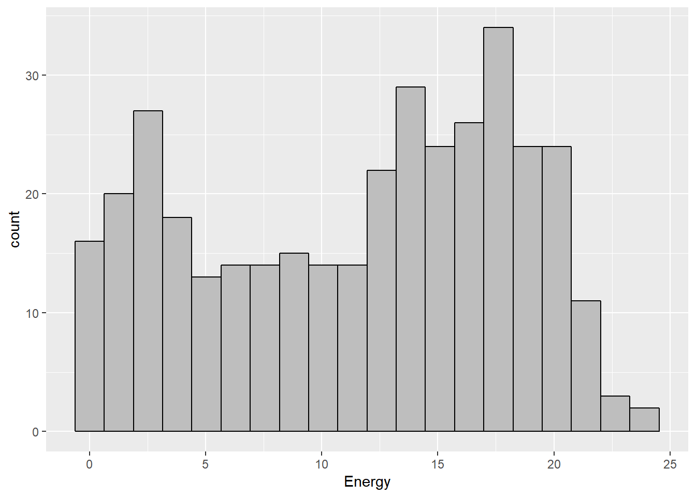
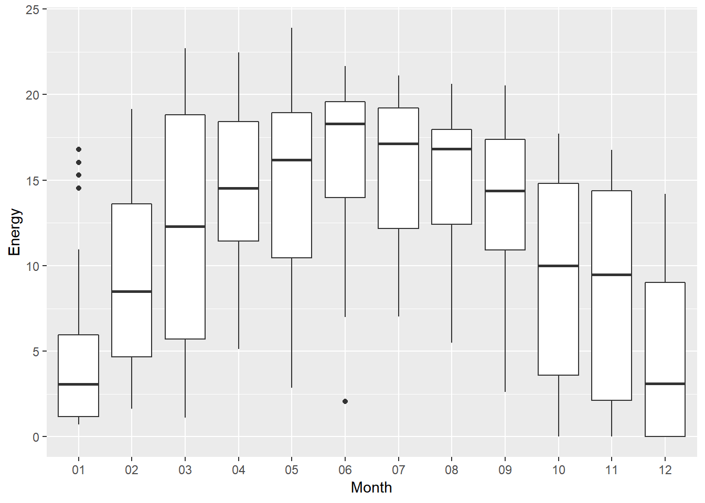
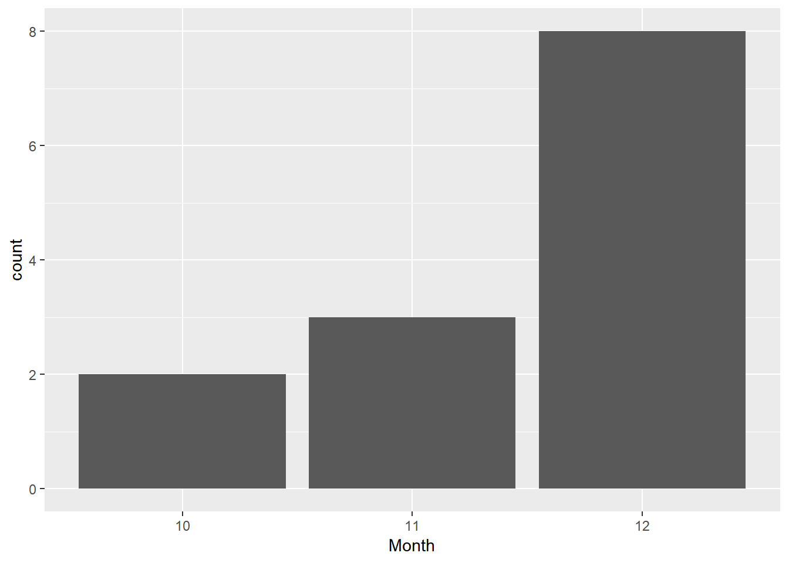

3 Part I - Solar
3.1 Introduction
3.1.1 Topic
I (D.Andrews) have a small home solar array. Its electrical energy generation not only offsets my own consumption, but the surplus essentially pays off my other fees from the electrical company each month. The inverter (which converts the DC current produced by the photoelectric panels to the AC current that we actually use) records how much power is generated at any given time, and it reports this to the manufacturer’s data repository via my home wifi. The manufacturer’s system then automatically sends me daily and weekly reports on the system’s energy performance.
3.1.2 Data
In the Solar subfolder are all my weekly reports from 2017. Each weekly report has 8 lines - a header and data for each day of that week - so the cases are days. The report format changed early in the year. Here are the variables for the first few reports:
- date
- time of the report
- energy generated by this inverter, in Watt-hours (Wh)
- total energy generated by all inverters on the array
- ratio of the energy generated (in Wh) to the maximum power rating (in W) of the array
The time of the report is always 00:00:00, so that’s worthless. I have only one inverter, so the total energy is always identical to the energy of my lone inverter. That ratio will always be perfectly proportional to the energy generated, so it’s redundant info, too.
Here are the variables in the remaining reports:
- date
- energy generated by this inverter, in kiloWatt-hours (kWh)
- ratio of energy generated to maximum power rating (in kWh/kW)
- total energy generated that day by all my inverters
3.2 Data Wrangling
Before making any data analysis, the following packages must be loaded:
library(tidyverse)
library(mosaic)
library(knitr)3.2.1 Early Reports
I wanted to combine the early reports into 1 table, since there are 3 early reports files and I didn’t want to import each one of those, do some wrangling and duplicate my work again.
So to combine the files, I did the following:
First, I set the working directory, using the setwd() function. Then, the list.files() function was used to get a list of all files in the directory. I also used getwd() to get the working directory.
Since I only wanted the early reports, I used grepl() to look for all files that begins with “W” - which are the early reports’ files.
After that, I utilized the lapply() function to apply read.csv() to all values of EarlyFiles. I also set header = FALSE, stringsAsFactors = FALSE (to make sure character values are imported as characters, not factors) and skipped the first row of each file (the row that contains the variable names).
The result of each read.csv() was stored in a list, so I used do.call() and rbind to turn it into one data table. I called this output table “Solar1”
setwd("~/Data229/Project/Solar/")
EarlyFiles <- list.files(getwd())
EarlyFiles <- EarlyFiles[grepl("^W", EarlyFiles)]
Solar1 <- lapply(EarlyFiles, read.csv, header = FALSE, stringsAsFactors = FALSE, skip = 1)
Solar1 <- do.call(rbind, Solar1)I renamed the first and second columns as “Date” and “Energy_Wh” (since the energy is measured in Wh in these first files). I then used select() to select the first 2 columns because I only need those 2.
colnames(Solar1)[1] <- "Date"
colnames(Solar1)[2] <- "Energy_Wh"
Solar1 <- select(Solar1, Date, Energy_Wh)Now let’s take a quick look at the data table we get by combining the early reports.
kable(Solar1 %>% head())| Date | Energy_Wh |
|---|---|
| 02.01.2017 00:00:00 | 2017.9711 |
| 03.01.2017 00:00:00 | 1051.9311 |
| 04.01.2017 00:00:00 | 16025.5489 |
| 05.01.2017 00:00:00 | 726.2458 |
| 06.01.2017 00:00:00 | 10947.3014 |
| 07.01.2017 00:00:00 | 16800.0856 |
3.2.2 Remaining Reports
To combine the remaining reports, I repeated the same process I used to combine the early reports. The only changes I made was that I looked for filenames that starts with “PV” (which are the remaining files) and skipped the first 2 rows of these files. The output table is named “Solar2”
setwd("~/Data229/Project/Solar")
RemainingFiles <- list.files(getwd())
RemainingFiles <- RemainingFiles[grepl("^PV", RemainingFiles)]
Solar2 <- lapply(RemainingFiles, read.csv, header = FALSE, stringsAsFactors = FALSE, skip = 2)
Solar2 <- do.call(rbind, Solar2)colnames(Solar2)[1] <- "Date"
colnames(Solar2)[2] <- "Energy"
Solar2 <- select(Solar2, Date, Energy)3.2.3 Joining Tables
Now, in order to make the some data analysis, I need to figure out how to join the tables together.
The final data table should have the following variables:
- Month
- Day
- Energy
The following wrangling techniques were performed on both tables:
Separating the date
For table 1, since energy in the remaining files is measured in kWh, I wanted to change the unit of energy in these early files into the exact same unit, using this conversion: 1 kWh = 1000 Wh.
Creating a new variable called “FakeYear” (we need a year for the date variable)
Solar1 <- Solar1 %>%
separate(Date, into = c("Day", "Month", "Year","Time1", "Time2", "Time3")) %>%
mutate(Energy = Energy_Wh/1000, FakeYear = 1000) %>%
unite(FakeDate, FakeYear, Month, Day, sep = "-") %>%
mutate(FakeDate = as.Date(FakeDate), Energy = as.double(Energy)) %>%
select(FakeDate, Year, Energy)Solar2 <- Solar2 %>%
separate(Date, into = c("Day", "Month", "Year")) %>%
mutate(FakeYear = 1000) %>%
unite(FakeDate, FakeYear, Month, Day, sep = "-") %>%
mutate(FakeDate = as.Date(FakeDate), Energy = as.double(Energy))After that, it’s time to join the 2 tables. I named the final table “Solar2017”.
Solar2017 <- full_join(Solar1, Solar2, by = "FakeDate")
Solar2017 <- select(Solar2017, FakeDate, Energy.x, Energy.y)The output table is “wide”. To turn it into a “narrow” table, I gathered the energy into one column.
colnames(Solar2017)[1] <- "Date"
Solar2017 <- gather(Solar2017, Energy.x, Energy.y, key = "EnergyXY", value = "Energy")Solar2017 <- Solar2017 %>%
filter(!is.na(Energy)) %>%
select(-EnergyXY) %>%
arrange((Date)) %>%
separate(Date, into = c("Year", "Month", "Day")) %>%
select(-Year)After a few other wrangling steps, I finally got the data table that I need. Here is the first few rows of the final table:
kable(Solar2017 %>% head())| Month | Day | Energy |
|---|---|---|
| 01 | 02 | 2.0179711 |
| 01 | 03 | 1.0519311 |
| 01 | 04 | 16.0255489 |
| 01 | 05 | 0.7262458 |
| 01 | 06 | 10.9473014 |
| 01 | 07 | 16.8000856 |
3.3 Data Exploring
3.3.1 2017 Energy
Solar2017 %>%
ggplot(mapping = aes(Energy)) +
geom_histogram(bins = 20, color = "black", fill = "grey")
kable(favstats(~ Energy, data = Solar2017))| min | Q1 | median | Q3 | max | mean | sd | n | missing | |
|---|---|---|---|---|---|---|---|---|---|
| 0 | 5.405 | 12.89 | 17.275 | 23.9 | 11.54916 | 6.625288 | 364 | 0 |
The distribution of 2017 Energy is somewhat skewed to the left. The average enery the array generated was 11.55 kWh. The maximum energy generated on one day was 23.8; whereas the minimum is 0, which means the array was down during those day.
3.3.2 Monthly Energy
Solar2017 %>%
ggplot(mapping = aes(x = Month, y = Energy)) +
geom_boxplot() 
The distribution of energy looks normalish. The 3 summer months (June, July and August) have the most amount of energy generated, which is no surprised since summer is the “sunniest” time of the year. The highest enery generated day is actually in May. On the other hand, January and December are when the energy generated the least, because those are 2 winter months and we can hardly see the sun during wintertime.
3.3.3 No Energy Generated
kable(Solar2017 %>%
filter(Energy == 0) %>%
count(Month))| Month | n |
|---|---|
| 10 | 2 |
| 11 | 3 |
| 12 | 8 |
Solar2017 %>%
filter(Energy == 0) %>%
ggplot(mapping = aes(Month)) +
geom_bar()
The array was down 2 times in October, 3 times in November and 8 times in December, so it was down for a total of 13 days in 2017.